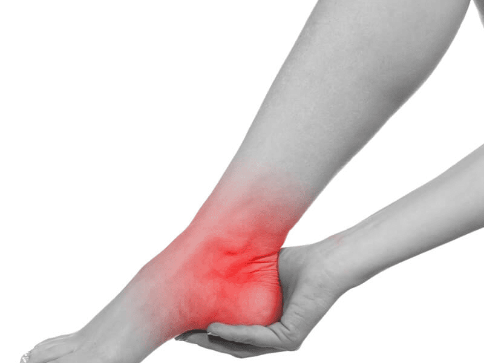

Hoi! Ik ben Brenda en ik ben praktijkondersteuner hier bij Dr. Schut. Ik werk hier nu 4 jaar met veel plezier. Wie weet kom ik je tegen bij ons in de gang.
Pijn in de enkel ontstaat meestal na een verzwikking of verstuiking van de enkel waarbij de enkelbanden en/of het kraakbeen worden beschadigd. Meestal herstelt de pijn in de enkel vanzelf. Bij enkelpijn is in 30 procent van de gevallen verdere diagnose en behandeling nodig.
Tot je verkoudheid helemaal over is, kunnen onderstaande tips je klachten verlichten: Drink voldoende. Elke dag heeft je lichaam 1,5 tot 2 liter vocht nodig. Ga stomen. Leg voordat je gaat slapen een halve ui op je nachtkastje. Leg een extra kussen onder je hoofdkussen als je gaat slapen. Stop met roken.